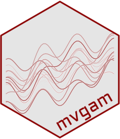

Example use cases for mvgam
mvgam_use_cases.Rdmvgam is a package for fitting dynamic generalized additive models (GAMs) to univariate or multivariate data. It combines the flexibility of smooth functions with latent temporal processes to model autocorrelation, seasonality, and uncertainty. The package supports both univariate and multivariate time series, making it especially useful for ecological and environmental forecasting. Bayesian inference via Stan allows for full uncertainty quantification and forecasting in complex, non-Gaussian settings.
This help page provides external links to example applications and discussions relevant to the use of mvgam models. These examples span non-Gaussian time series modelling, multivariate abundance forecasting, and the use of complex predictors such as time-varying seasonality, monotonic nonlinear effects and Gaussian processes.
Details
Non-Gaussian time series modelling and forecasting
mvgam is designed for real-world time series data that include discrete, zero-inflated, or overdispersed observations. It supports latent dynamic components and smooth terms to model autocorrelation, trends, and uncertainty.
Uncertain serial autocorrelation in GAM count model residuals
Fitting an autoregressive model and Poisson process interdependently
Visualising autocorrelation in irregularly spaced count data
Video tutorial: Ecological forecasting with Dynamic Generalized Additive Models
Multivariate time series modelling and forecasting
mvgam supports multivariate models with shared or correlated latent trends, making it suitable for a broad range of applications that gather data on multiple time series simultaneously.
Ecological modelling: multivariate abundance time-series data
Chains stuck in a local optimum: correlated Poisson distributions
Blog post: Hierarchical distributed lag models in
mgcvandmvgamArticle: One shared process, many sensors: multi-response
mvgamVideo tutorial: Time series in R and Stan using the
mvgampackage: hierarchical GAMs
Seasonality and other complex predictors
mvgam allows for flexible modelling of seasonal patterns and nonlinear effects using cyclic smooths, Gaussian processes, monotonic smooths and hierarchical structures.